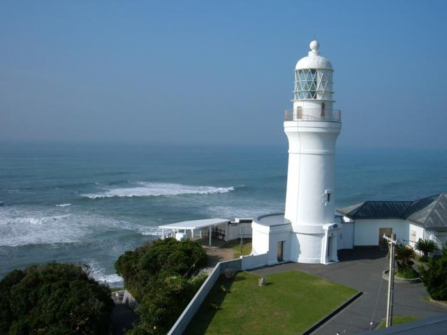

戻る
御前崎灯台

概要 : 静岡県最南端、御前崎市のシンボル 1874年、イギリス人技師の監督のもとに誕生した白亜の洋式灯台。 百三十余年、烈風や地震等の被害にも屈せず美しい姿のまま海の安全を見守っています。 天気が良ければ、伊豆半島、富士山、南アルプス、遠州灘と360°静岡を体感できます。
住所 : 静岡県御前崎市御前崎1581
営業時間 : ホームページで確認
電話番号 : 0548-63-2550
ホームページ :
hhttps://bit.ly/3ynG4gd